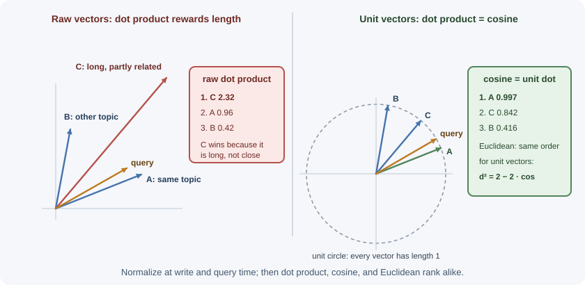

Embedding Models and Dimensions¶
An embedding model turns a piece of text (or an image, audio clip, or PDF page) into a fixed-length list of numbers, so that inputs with related meaning end up close together. Every retrieval feature in TaskFlow, from project-knowledge Q&A over docs and notes to "find similar tasks" in the TaskFlow Assistant, depends on that model's idea of "close".
This lesson covers what an embedding model produces, how to choose between a hosted embedding API and an open-weight model, what vector dimensions cost and how Matryoshka truncation lets you shorten vectors, why normalization decides whether dot product, cosine similarity, and Euclidean distance agree, how multilingual models behave, and how to re-embed a collection safely when the model changes. Vector indexes are covered in vector databases and indexes; combining vectors with keyword search is in hybrid search and reranking.
Why it matters¶
The embedding model sets an upper limit on retrieval quality: if the right note is not near the question in vector space, no index, reranker, or prompt can bring it back. The choice also has lasting costs. The number of dimensions multiplies storage, memory, and query time for every vector you keep, and a vector is only comparable with vectors from the same model, version, and settings. Switching models later means re-embedding every document, so the first choice deserves an evaluation rather than a guess.
Small details cause silent failures. A dot-product index fed vectors that are not unit length ranks long documents first. Truncating vectors from a model that was not trained for it scrambles results. Embedding queries in "document" mode, or mixing two models in one index, lowers recall without raising a single error. Knowing the mechanics turns these from mysteries into checklist items.
Real-world usage¶
- OpenAI. The
embeddings guide
documents the
dimensionsparameter for shortening vectors and notes that, on the MTEB benchmark, atext-embedding-3-largeembedding shortened to 256 dimensions still outperforms an unshortenedtext-embedding-ada-002embedding of 1,536 dimensions. It also states that its embeddings are normalized to length 1, so cosine similarity can be computed with a dot product, and that vectors shortened by hand must be re-normalized. - Matryoshka Representation Learning. The MRL paper (Kusupati et al., 2022) introduced training that makes every prefix of an embedding useful on its own. It reports up to 14 times smaller embeddings at the same accuracy for ImageNet-1K classification and up to 14 times real-world speed-ups for large-scale retrieval. Most current embedding APIs offer shortened outputs built on this idea.
- Spotify. In Introducing Natural Language Search for Podcast Episodes (2022), Spotify describes choosing a multilingual Universal Sentence Encoder model pre-trained on more than 100 languages over an English-only BERT model, fine-tuning it on query and episode pairs from search logs, and serving episode vectors from Vespa as an extra retrieval source next to its existing Elasticsearch search.
- MMTEB. The
Massive Multilingual Text Embedding Benchmark
(2025) covers more than 500 evaluation tasks in over 250 languages. Its
authors report that the best publicly available model overall was
multilingual-e5-large-instruct, with only 560 million parameters: bigger models are not automatically better, so measure on your own data.
Popular tools and providers: OpenAI embeddings, Google Gemini API embeddings, Cohere Embed, Voyage AI, open-weight models such as Qwen3 Embedding, EmbeddingGemma, and the E5 family, the sentence-transformers library, Hugging Face Text Embeddings Inference, and the MTEB leaderboard for shortlisting models.
How it works¶
What an embedding model produces¶
An embedding model is usually a transformer encoder. It splits the input into tokens, produces a vector per token, and pools them (for example by averaging) into one vector with a fixed number of dimensions: 1,024 or 3,072 numbers, whatever the input length. Training pulls related pairs (a question and the passage that answers it, a sentence and its translation) together and pushes unrelated ones apart, so distance in the output space approximates "how related are these for this kind of task".
Three properties follow from that and shape every design decision:
- Each model has its own space. Coordinates mean nothing across models. A vector from one model compared with a vector from another gives a number, but not a meaningful one. Treat the model ID, version, dimension setting, and normalization as part of the data's schema.
- Inputs have a token limit. Text past the limit is cut or rejected,
so chunking (covered in
document ingestion and chunking)
happens before embedding. As of November 2026, OpenAI's models accept
8,192 tokens per input,
gemini-embedding-2accepts 8,192, Voyage's 4 series 32,000, and Cohere's Embed 5 128,000. - Queries and documents are different. A question is short and phrased as a need; a passage is long and phrased as an answer. Many models embed the two differently, through a parameter or a text prefix, and using the wrong mode quietly lowers recall.
How the main providers handle queries and documents (as of November 2026):
| Provider or model | How to mark queries and documents |
|---|---|
| OpenAI text-embedding-3 | No distinction; the same call for both |
Gemini gemini-embedding-2 |
Task prefixes written into the text itself, as described in Google's embeddings guide |
Gemini gemini-embedding-001 |
taskType: RETRIEVAL_QUERY or RETRIEVAL_DOCUMENT |
| Cohere Embed (v3 and later) | Required inputType: search_query or search_document |
| Voyage AI | input_type: query or document (prepends a fixed prompt) |
| Qwen3 Embedding | An instruction before each query; documents take none |
| sentence-transformers | encode_query() and encode_document() apply the model's saved prompts |
Hosted APIs compared with open-weight models¶
| Aspect | Hosted embedding API | Open-weight model you run |
|---|---|---|
| Start-up effort | An API key and one HTTP call | A serving stack on CPU or GPU (see serving open models) |
| Cost shape | Per token embedded; cheap at low volume, grows with every backfill | Hardware hours; cheaper at steady high volume, costs more when idle |
| Data handling | Text leaves your network; check the provider's retention terms | Text stays on your machines |
| Model lifecycle | The provider retires models on its schedule, forcing re-embedding | You decide when to change, and old weights keep working |
| Quality | Strong general models, often with multilingual and multimodal input | Competitive open models; can be fine-tuned on your domain |
| Latency | A network round trip per batch | Local calls; batch on a GPU for throughput |
Neither choice is final, because the re-embedding procedure below works
in both directions. Pick a model from the provider's current model list
(or a shortlist from the MTEB leaderboard for open models), then compare
two or three candidates on TaskFlow's own data: 100 to 200 real questions,
each labeled with the chunks that answer it, scored with recall@10 as
described in hybrid search and reranking.
Keep the chosen model ID in configuration (EMBEDDING_MODEL), never in
code, so the evaluation and the migration can switch it.
Dimensions: what they cost¶
Each dimension is one number per stored vector. At 4 bytes per float32
value, the raw vectors for one million chunks need:
| Dimensions | Bytes per vector | 1 million vectors (raw) |
|---|---|---|
| 3,072 | 12,288 | 12.3 GB |
| 1,536 | 6,144 | 6.1 GB |
| 1,024 | 4,096 | 4.1 GB |
| 768 | 3,072 | 3.1 GB |
| 256 | 1,024 | 1.0 GB |
Indexes add their own overhead on top (an HNSW graph stores neighbor
links for every vector), and the fast indexes want everything in memory.
Distance calculations also scale with dimensions, so a 3,072-dimension
search does roughly three times the arithmetic of a 1,024-dimension one.
Limits apply too: pgvector's HNSW index accepts up to 2,000 dimensions for
the vector type and 4,000 for halfvec, and MongoDB Vector Search
accepts up to 8,192.
Smaller vectors are cheaper to store and faster to search; larger ones usually retrieve slightly better. The useful question is how much recall the last dimensions buy on your data, and Matryoshka models let you measure that without changing models.
Matryoshka truncation¶
![Diagram: a 3,072-dimension Matryoshka embedding drawn as a bar whose first 1,536, 768, and 256 values are nested prefixes; each prefix is usable on its own after re-normalizing; raw storage for one million vectors is 12.3 GB at 3,072 dimensions, 6.1 GB at 1,536, 3.1 GB at 768, and 1.0 GB at 256, with retrieval quality dropping gradually rather than collapsing; a second row shows a common pattern: search a short prefix or a quantized copy to get candidates, then rescore the top candidates with the full vectors.](../matryoshka-truncation.svg)
Matryoshka Representation Learning trains a model so that the first k
values of its embedding are a good embedding by themselves, for several
values of k. Like nested dolls, the 256-dimension vector sits inside the
768, which sits inside the 3,072. You can therefore keep only a prefix:
- Server-side shortening. Ask the API for fewer dimensions: OpenAI's
dimensions, Gemini'soutputDimensionality(128 to 3,072, recommended 768, 1,536, or 3,072), Cohere Embed 5's output dimension (256 to 2,048), or Voyage'soutput_dimension(256, 512, 1,024, or 2,048). These values come from each provider's documentation as of November 2026. - Client-side truncation. Store the full vector and slice it. A prefix
of a unit vector is shorter than 1, so re-normalize after slicing.
OpenAI's guide says so explicitly, Google's documentation asks for it
with
gemini-embedding-001, andgemini-embedding-2re-normalizes non-default sizes automatically. In sentence-transformers,truncate_dimruns beforenormalize_embeddings, so the output is unit length.
Truncation only works for models trained this way. Slicing an ordinary model's vector throws away information that was spread across all dimensions and can degrade results badly. Check the model card or API documentation for Matryoshka support before shortening.
A related trick is two-stage retrieval: search a cheap representation
(a short prefix, int8 or binary values) to get candidates quickly, then
rescore the top candidates with the full vectors. The pgvector
documentation shows exactly this with binary quantization followed by a
rescore of the top 20 results.
Quantization: fewer bytes per dimension¶
Dimensions are one lever; bytes per dimension are the other. Several
providers can return int8 (1 byte) or binary (1 bit) values, and
databases can quantize for you: MongoDB Vector Search offers scalar and
binary quantization, pgvector has halfvec (2 bytes) and
binary_quantize, and FAISS has scalar and product quantizers. An int8
vector is a quarter of the float32 size and a binary vector a
thirty-second, at some cost in recall that rescoring mostly recovers.
Vector databases and indexes shows the
index side.
Normalization and similarity measures¶

Three measures are common:
| Measure | Formula | Notes |
|---|---|---|
| Dot product | sum(a[i] * b[i]) |
Fastest; grows with vector length as well as direction |
| Cosine similarity | dot(a, b) / (norm(a) * norm(b)) |
Direction only, from -1 to 1 |
| Euclidean distance | sqrt(sum((a[i] - b[i])^2)) |
Smaller is closer |
For unit vectors (length 1) the three agree. Cosine similarity becomes
the dot product, and squared Euclidean distance becomes
2 - 2 * cosine, so sorting by any of them gives the same order. That is
why normalizing once, at write time and at query time, is the simplest
policy: you can then use the fastest operator your database offers.
Without normalization they disagree. In the demo in the practical examples below, note C points away from the query but is long, so it wins on raw dot product (2.32 against 0.955 for note A) while cosine ranks A first (0.997 against 0.842). If an index is configured for dot product and the vectors are not unit length, long chunks crowd the top of every result list.
Map the choice to your database exactly:
| Store | Cosine | Dot product | Euclidean |
|---|---|---|---|
| pgvector | <=> returns cosine distance (1 - cosine) |
<#> returns the negative inner product |
<-> |
| MongoDB Vector Search | similarity: "cosine" |
similarity: "dotProduct" (vectors must be unit length) |
similarity: "euclidean" |
| FAISS | Normalize, then IndexFlatIP |
IndexFlatIP |
IndexFlatL2 |
OpenAI states that its embeddings are already unit length. When a provider does not say, normalize yourself; it costs one pass over the vector and removes a whole class of bugs.
Absolute scores are not portable. One model may score unrelated texts at 0.75 and related ones at 0.85; another spreads them from 0.1 to 0.6. A threshold such as "only use results above 0.8" must be calibrated per model and re-calibrated after every model change.
Multilingual embeddings¶
A multilingual model is trained on many languages with translation pairs,
so "When is the sprint review?" lands near "La revue de sprint est
déplacée à jeudi". That enables cross-lingual retrieval: TaskFlow users can
ask in English and find notes written in French or Hindi. As of November
2026, Google lists gemini-embedding-2 for over 100 languages, Cohere
lists Embed 5 for 100+ languages, and Qwen3 Embedding's model card claims
100+ languages including programming languages.
Points to check before relying on it:
- English-only models exist. Some families ship English and multilingual variants (Cohere's v3 models do). An English model fed other languages returns vectors, just poor ones.
- Quality varies by language. Benchmarks such as MMTEB publish per-language results; evaluate the languages your users actually write in, not only the average.
- Tokens vary by language. Tokenizers split some scripts into many more tokens, so the same text length reaches the input limit sooner.
- Keyword search needs per-language analysis. Stemming and stop words are language-specific, which matters when you add BM25 (see hybrid search and reranking).
Re-embedding when the model changes¶
![Diagram: a migration timeline for moving note chunks from embedding version 1 to version 2; step 1 adds a new vector field and a new index; step 2 dual-writes every new or edited chunk with both models; step 3 backfills older chunks in batches; step 4 compares recall@10 of both indexes on the evaluation set and shadows real queries; step 5 switches the query path to version 2 through configuration, first for a small share of traffic; step 6 keeps version 1 for a rollback window; step 7 drops the old field and index; queries keep using version 1 until the cutover.](../reembedding-migration.svg)
You will change models: a better one appears, a provider retires the one you use, or you change dimensions. Because spaces are incompatible, every stored vector must be recomputed, and the old and new vectors must never be mixed in one index. Two exceptions exist, both documented by their providers as of November 2026: Cohere says Embed 5 Pro and Fast share one space (index with Pro, query with Fast), and Voyage says all embeddings from its 4 series are compatible with each other. Outside such explicit guarantees, assume a new model means a new space.
The safe procedure is a parallel migration, the same expand and contract idea used for zero-downtime database migrations:
- Record the space with every vector. Store an
embeddingVersionsuch as<model>@1024next to the vector, so you can always tell which space a document is in. - Expand. Add a second vector field and a second index for the new model. Production queries keep using the old one.
- Dual-write. New and edited chunks get both embeddings from now on.
- Backfill. Re-embed older chunks in resumable batches, respecting rate limits. Batch endpoints, where a provider offers them for embeddings, suit this work because nothing waits on the result (see prompt caching and batch processing).
- Evaluate. Compare recall@10 of both indexes on the evaluation set, and shadow a sample of real queries against the new index.
- Cut over. Switch the query path through configuration, ideally for a small share of traffic first, then for everyone.
- Contract. After a rollback window, drop the old field and index.
A worked estimate: TaskFlow holds 400,000 chunks averaging 350 tokens, about 140 million tokens. If the account allows 1,000,000 tokens per minute, the backfill needs at least 140 minutes of embedding time, plus retries and database writes. Plan it as an operation with progress logs and a resume point, not as a one-off loop in a console.
When to use and when not to use¶
| Situation | Choose | Why |
|---|---|---|
| Prototype or small corpus, mostly English | A hosted model at its default size | Fastest start; nothing to operate |
| Text must not leave your network | An open-weight model on your own hardware | Data stays local; you control upgrades |
| Users write in several languages | A multilingual model, evaluated per language | Cross-lingual retrieval works only if each language is good |
| Millions of chunks, memory-bound index | A Matryoshka model at 256 to 768 dimensions, or int8/binary with rescoring |
Cheaper storage and faster search for a small recall cost |
| Code, legal, or other specialist text | Compare a domain model with a general one on your data | Domain models can win, but only measurement shows it |
| Exact identifiers dominate (ticket numbers, error codes) | Keyword search first, embeddings as a second signal | Embeddings blur exact strings; see hybrid search |
Embeddings are the wrong tool for exact lookups, numeric ranges, and structured filters such as "tasks due this week assigned to Ana". Those belong in ordinary database queries, often combined with vector search as a filter.
Practical examples¶
Similarity helpers and a normalization demo¶
// src/ai/vector-math.ts
// Similarity helpers for embedding vectors. Plain arrays keep the example
// dependency-free; use Float32Array for large batches.
export type Vector = readonly number[];
export function dot(a: Vector, b: Vector): number {
if (a.length !== b.length) {
throw new Error(`dimension mismatch: ${a.length} vs ${b.length}`);
}
let sum = 0;
for (let i = 0; i < a.length; i++) sum += a[i] * b[i];
return sum;
}
export function norm(a: Vector): number {
return Math.sqrt(dot(a, a));
}
// Scale to length 1 so that dot product and cosine similarity are equal.
export function normalize(a: Vector): number[] {
const n = norm(a);
if (n === 0) throw new Error("cannot normalize a zero vector");
return a.map((x) => x / n);
}
export function cosine(a: Vector, b: Vector): number {
return dot(a, b) / (norm(a) * norm(b));
}
export function euclidean(a: Vector, b: Vector): number {
if (a.length !== b.length) {
throw new Error(`dimension mismatch: ${a.length} vs ${b.length}`);
}
let sum = 0;
for (let i = 0; i < a.length; i++) sum += (a[i] - b[i]) ** 2;
return Math.sqrt(sum);
}
// Matryoshka-style shortening: keep the first `dims` values, then
// re-normalize, because the prefix of a unit vector is shorter than 1.
export function truncate(a: Vector, dims: number): number[] {
if (!Number.isInteger(dims) || dims < 1 || dims > a.length) {
throw new Error(`dims must be an integer between 1 and ${a.length}`);
}
return normalize(a.slice(0, dims));
}
// src/scripts/similarity-demo.ts
// Run: node --experimental-strip-types src/scripts/similarity-demo.ts
import { cosine, dot, euclidean, norm, normalize, truncate } from "../ai/vector-math.ts";
// Toy 4-dimensional vectors: a query and three task notes.
const query = [0.9, 0.3, 0.1, 0.3]; // "move the sprint review"
const notes: Record<string, number[]> = {
A: [0.85, 0.35, 0.1, 0.25], // same topic, similar length
B: [0.2, 0.1, 0.9, 0.4], // different topic
C: [2.0, 0.2, 1.6, 1.0], // partly related, very long
};
const round = (x: number) => Number(x.toFixed(4));
const rank = (score: (v: number[]) => number) =>
Object.entries(notes)
.map(([id, v]) => [id, round(score(v))] as const)
.sort((x, y) => y[1] - x[1]);
console.log("raw dot ranking:", rank((v) => dot(query, v)));
console.log("cosine ranking: ", rank((v) => cosine(query, v)));
// After normalization, dot product equals cosine and Euclidean agrees.
const q = normalize(query);
console.log("unit dot ranking:", rank((v) => dot(q, normalize(v))));
console.log("euclidean (unit):", rank((v) => -euclidean(q, normalize(v))));
const a = normalize(notes.A);
console.log("d^2 =", round(euclidean(q, a) ** 2), " 2 - 2cos =", round(2 - 2 * dot(q, a)));
// Shortening a unit vector: the prefix is no longer length 1.
console.log("prefix norm (2 of 4 dims):", round(norm(q.slice(0, 2))));
const short = truncate(q, 2);
console.log("truncate + renormalize:", short.map(round), "norm", round(norm(short)));
Output of a real run on Node.js 22:
raw dot ranking: [ [ 'C', 2.32 ], [ 'A', 0.955 ], [ 'B', 0.42 ] ]
cosine ranking: [ [ 'A', 0.997 ], [ 'C', 0.8416 ], [ 'B', 0.4159 ] ]
unit dot ranking: [ [ 'A', 0.997 ], [ 'C', 0.8416 ], [ 'B', 0.4159 ] ]
euclidean (unit): [ [ 'A', -0.0773 ], [ 'C', -0.5629 ], [ 'B', -1.0809 ] ]
d^2 = 0.006 2 - 2cos = 0.006
prefix norm (2 of 4 dims): 0.9487
truncate + renormalize: [ 0.9487, 0.3162 ] norm 1
The raw dot product promotes the long vector C; cosine, the dot product of unit vectors, and Euclidean distance on unit vectors all agree on A. The last two lines show why truncation must be followed by re-normalization.
Embedding notes with a configured model¶
# .env (example; choose the model from your provider's current model list)
EMBEDDING_MODEL=<embedding-model-id>
EMBEDDING_DIMENSIONS=1024
// src/ai/embeddings.ts
// Embeds TaskFlow notes and queries with one configured model. The model ID and
// size come from configuration; every stored vector records which ones made it.
import OpenAI from "openai";
const client = new OpenAI(); // reads OPENAI_API_KEY (and OPENAI_BASE_URL) from env
export interface EmbeddingSpace {
model: string; // for example process.env.EMBEDDING_MODEL
dimensions: number; // must match the vector index definition
version: string; // stored next to every vector, e.g. "<model>@1024"
}
export function embeddingSpace(env = process.env): EmbeddingSpace {
const model = env.EMBEDDING_MODEL;
const dimensions = Number(env.EMBEDDING_DIMENSIONS);
if (!model) throw new Error("EMBEDDING_MODEL is not set");
if (!Number.isInteger(dimensions) || dimensions <= 0) {
throw new Error("EMBEDDING_DIMENSIONS must be a positive integer");
}
return { model, dimensions, version: `${model}@${dimensions}` };
}
// The API accepts up to 2,048 inputs and 300,000 tokens per request; smaller
// batches keep retries cheap and stay far from the token limit.
const BATCH_SIZE = 100;
export async function embedTexts(
texts: string[],
space: EmbeddingSpace = embeddingSpace(),
): Promise<number[][]> {
if (texts.some((t) => t.trim() === "")) throw new Error("cannot embed empty text");
const vectors: number[][] = [];
for (let start = 0; start < texts.length; start += BATCH_SIZE) {
const batch = texts.slice(start, start + BATCH_SIZE);
const response = await client.embeddings.create({
model: space.model,
input: batch,
dimensions: space.dimensions, // shortened server-side, returned normalized
encoding_format: "float",
});
// Each item carries its input position; never rely on array order alone.
const byIndex = [...response.data].sort((a, b) => a.index - b.index);
if (byIndex.length !== batch.length) {
throw new Error(`expected ${batch.length} embeddings, got ${byIndex.length}`);
}
for (const item of byIndex) {
if (item.embedding.length !== space.dimensions) {
throw new Error(`expected ${space.dimensions} dimensions, got ${item.embedding.length}`);
}
vectors.push(item.embedding);
}
}
return vectors;
}
export async function embedQuery(text: string, space = embeddingSpace()): Promise<number[]> {
const [vector] = await embedTexts([text], space);
return vector;
}
embeddingSpace()turns configuration into an explicit description of the vector space, and itsversionstring is stored with each chunk.- The
dimensionsfield only works with models that support shortening (text-embedding-3and later for OpenAI); the dimension check catches a configuration that does not match the index. - Sorting by
indexprotects against relying on response order.
This module was type-checked against the openai package and exercised
against a local stub of the embeddings endpoint: 250 inputs went out as
three requests of 100, 100, and 50, and the vectors came back in input
order even though the stub returned them reversed.
Equivalents in other SDKs: Google's Gen AI SDK uses
ai.models.embedContent({ model, contents, config: { outputDimensionality } });
Cohere's v2 client uses
cohere.embed({ model, texts, inputType: "search_document", embeddingTypes: ["float"] })
with at most 96 texts per call; Voyage takes input_type and
output_dimension. For providers that distinguish queries from documents,
add a kind parameter to embedTexts and map it to the provider's
setting.
An open-weight model in Python¶
# scripts/embed_open_model.py
# Embeds TaskFlow notes with an open-weight model on your own hardware.
import os
from sentence_transformers import SentenceTransformer
# A Hugging Face model ID shortlisted from the MTEB leaderboard and your own evaluation.
model = SentenceTransformer(
os.environ["EMBEDDING_MODEL"],
truncate_dim=int(os.environ.get("EMBEDDING_DIMENSIONS", "512")), # Matryoshka models only
)
notes = [
"Billing migration: invoices move to the new system in March.",
"Migration de la facturation : les factures passent au nouveau système en mars.",
]
# encode_document / encode_query apply the model's document and query prompts, if any.
doc_vectors = model.encode_document(notes, normalize_embeddings=True)
query_vector = model.encode_query(
["What did we decide about the billing migration?"], normalize_embeddings=True
)
print(doc_vectors.shape) # (2, 512)
print(model.similarity(query_vector, doc_vectors)) # cosine scores, one row per query
This script was not run here because it downloads model weights; its calls were checked against the sentence-transformers 6.3 source, where truncation happens before normalization. With a multilingual model, the French note should score close to the English one for the English question.
Re-embedding into a second field¶
// src/scripts/reembed-chunks.ts
// Backfills a second vector field with the next embedding model, in batches,
// without touching the field that production queries still use.
import { MongoClient, type AnyBulkWriteOperation, type ObjectId } from "mongodb";
import { embedTexts, embeddingSpace } from "../ai/embeddings.ts";
interface NoteChunk {
_id: ObjectId;
workspaceId: ObjectId;
text: string;
updatedAt: Date;
embedding?: number[]; // current space, used by queries today
embeddingVersion?: string;
embeddingNext?: number[]; // next space, filled by this script
embeddingNextVersion?: string;
}
const next = embeddingSpace({
EMBEDDING_MODEL: process.env.NEXT_EMBEDDING_MODEL,
EMBEDDING_DIMENSIONS: process.env.NEXT_EMBEDDING_DIMENSIONS,
});
const mongo = new MongoClient(process.env.MONGODB_URI ?? "mongodb://localhost:27017");
const chunks = mongo.db("taskflow").collection<NoteChunk>("note_chunks");
let processed = 0;
try {
for (;;) {
// Resumable: anything not yet in the next space, oldest _id first.
const batch = await chunks
.find({ embeddingNextVersion: { $ne: next.version } })
.project<Pick<NoteChunk, "_id" | "text" | "updatedAt">>({ text: 1, updatedAt: 1 })
.sort({ _id: 1 })
.limit(100)
.toArray();
if (batch.length === 0) break;
const vectors = await embedTexts(batch.map((c) => c.text), next);
const ops: AnyBulkWriteOperation<NoteChunk>[] = batch.map((c, i) => ({
updateOne: {
// Skip chunks edited since we read them; the dual-write path covers those.
filter: { _id: c._id, updatedAt: c.updatedAt },
update: { $set: { embeddingNext: vectors[i], embeddingNextVersion: next.version } },
},
}));
const result = await chunks.bulkWrite(ops, { ordered: false });
processed += batch.length;
console.log(`batch done: ${result.modifiedCount}/${batch.length}, total ${processed}`);
}
} finally {
await mongo.close();
}
- The query
embeddingNextVersion: { $ne: next.version }makes the script resumable: rerun it after a crash and it continues where it stopped. - The
updatedAtcondition is a compare-and-set: a chunk edited during the backfill is skipped here and handled by the dual-write path, or picked up again on the next pass. - A second vector index on
embeddingNext(see vector databases and indexes) lets you compare both spaces before switchingVECTOR_FIELDin configuration.
The script was type-checked against the MongoDB Node.js driver; run it against a staging copy first.
Best practices¶
- Choose the embedding model with an evaluation on your own labeled questions, not from a leaderboard alone.
- Keep the model ID and dimensions in configuration and store a version string with every vector.
- Normalize vectors at write and query time unless the provider documents unit length, and configure the index metric to match.
- Use the provider's query and document modes or prompts consistently.
- Shorten only Matryoshka-trained models, and re-normalize after client-side truncation.
- Size dimensions by measured recall per gigabyte, and consider
int8or binary storage with rescoring for large collections. - Evaluate multilingual quality per language, and pair embeddings with keyword search for names and identifiers.
- Plan re-embedding as an expand, backfill, cut over, contract migration with a rollback window.
- Treat embeddings as sensitive as the text they came from: research (Morris et al., 2023) recovered 92% of 32-token inputs exactly from their embeddings. Apply the same access controls and retention rules (see privacy, PII, and data retention).
In production¶
- Relevance dropped right after a model upgrade.
Detect: recall@10 on the evaluation set falls and users report
unrelated answers, with no errors logged. Cause: new query vectors
were compared with old document vectors, or one index now holds two
spaces. Fix: store
embeddingVersionwith each vector, query only the index of one version, and migrate with a backfill before switching. - Results got worse after shortening vectors. Detect: recall falls sharply at the new dimension size. Cause: the model is not Matryoshka-trained, or truncated vectors were not re-normalized for a dot-product index. Fix: confirm Matryoshka support in the model documentation, re-normalize after slicing, and measure recall at each candidate size.
- Long chunks dominate every result list. Detect: the same few long documents rank near the top for unrelated questions. Cause: a dot-product index on vectors that are not unit length. Fix: normalize at write and query time, or switch the index to cosine similarity.
- A similarity threshold stopped working. Detect: after a model change, "no relevant notes found" appears much more or much less often. Cause: score distributions differ between models. Fix: recalibrate thresholds on labeled data per model, or prefer top-k with a reranker over fixed thresholds.
- Questions in one language never find notes in another. Detect: per-language evaluation shows near-zero cross-lingual recall. Cause: an English-only model, or a language the model covers poorly. Fix: use a multilingual model, evaluate per language, and keep keyword search with language analyzers as a second signal.
- Inserts fail with dimension errors after a configuration change.
Detect: the database rejects vectors, for example expecting 1,536
values and receiving 1,024. Cause:
EMBEDDING_DIMENSIONSchanged without a new index and migration. Fix: treat dimensions as part of the schema; a new size means a new field, index, and backfill. - The backfill fails halfway with rate-limit errors. Detect: HTTP 429 responses and a stalled progress log. Cause: a tight loop that ignores the provider's token-per-minute limit. Fix: batch, back off with jitter, make the job resumable, and schedule it off-peak or on a batch endpoint.
Important terminology¶
- Embedding: A fixed-length vector that represents an input so that related inputs are close together.
- Embedding space: The coordinate system defined by one model, version, and set of output settings.
- Dimensions: The number of values in each embedding vector.
- Matryoshka Representation Learning (MRL): Training that makes the prefixes of an embedding useful embeddings themselves.
- Normalization: Scaling a vector to length 1.
- Cosine similarity: The dot product of two vectors divided by the product of their lengths; it measures direction only.
- Quantization: Storing vector values with fewer bits, such as
int8or binary, to save memory. - Asymmetric retrieval: Retrieval in which short queries and long documents are embedded with different modes or prompts.
- Re-embedding: Recomputing stored vectors with a new model or setting, usually through a parallel migration.
- Multilingual embedding model: A model trained so that texts with the same meaning in different languages map close together.
Common mistakes and misconceptions¶
- Assuming vectors from different models or versions can share an index.
- Hard-coding the model ID instead of reading it from configuration.
- Truncating vectors from a model that was not trained for it.
- Forgetting to re-normalize after client-side truncation.
- Using a dot-product index with vectors that are not unit length.
- Treating cosine scores as calibrated probabilities that transfer between models.
- Choosing the largest dimension "to be safe" without measuring what it buys.
- Embedding queries in document mode, or skipping a model's query instruction.
- Believing embeddings are anonymous; they can leak the text they encode.
Revision questions¶
- Why can a vector from one embedding model not be compared with a vector from another, and what should you store to prevent mixing them?
- When do dot product, cosine similarity, and Euclidean distance produce the same ranking? Show the relationship for unit vectors.
- How does Matryoshka truncation differ from slicing an ordinary model's vector, and why must you re-normalize after slicing?
- Calculate the raw storage for 2 million 1,536-dimension
float32vectors, and for the same vectors asint8and as binary. - What changes when TaskFlow users start asking questions in Spanish about English notes, and how would you verify the model handles it?
- Describe the steps of a zero-downtime re-embedding migration and what the evaluation step should measure.
- A backfill covers 600,000 chunks of 300 tokens each and the account allows 2,000,000 tokens per minute. What is the minimum duration?
- When would you choose an open-weight embedding model over a hosted API, and what costs come with it?